Not medical advice
Cradle is a notebook. Its goals are placeholders, and its totals are simple arithmetic on what you type. Follow your pediatrician or care team, and call them if you're worried about your baby.
Baby log
Nurse, bottle top-up, pump, wet, stool, Vitamin D, and bath time, logged in a few taps and shared live with everyone on feeding duty. Built for tired hands, dark rooms, and the pediatrician's questions.
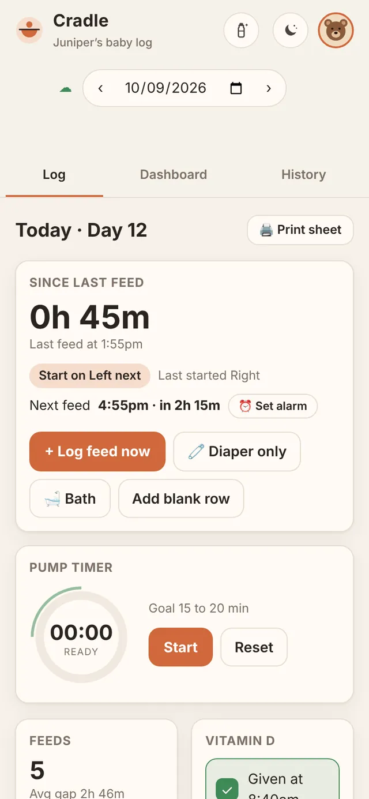
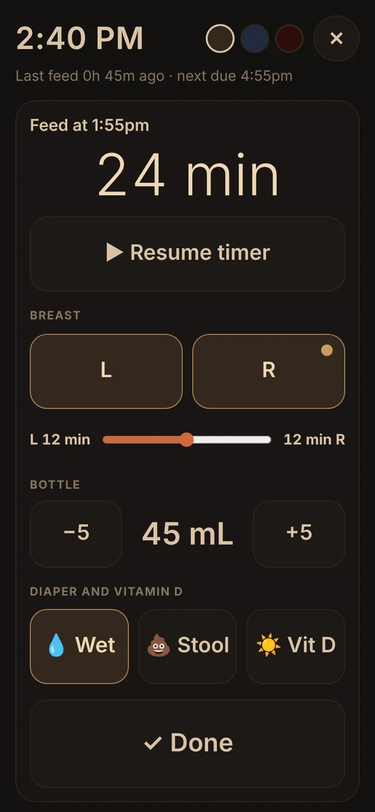
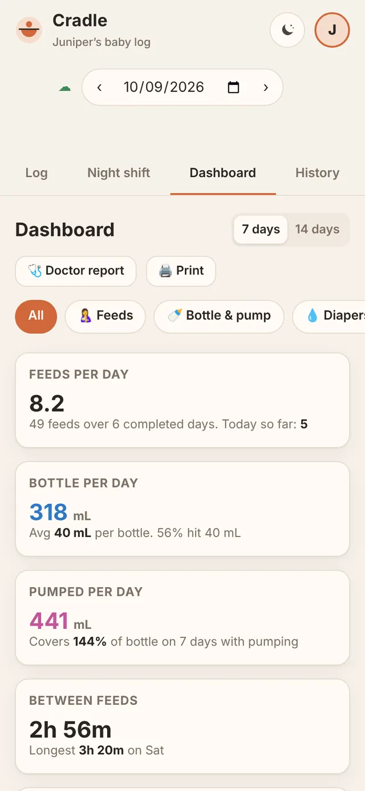
The triple-feed cycle
Triple feeding means nursing, then a bottle top-up, then pumping, every few hours, around the clock. Cradle keeps the whole session together so the totals add up the way your care team asks about them. Only nursing, or only bottles? Turn off what you don’t use in Settings, and it’s hidden everywhere.
Tap the sides you used. The first side gets a dot, so you know where to start next time. A ▶ timer fills in the minutes, and a slider splits them between sides.
Bottle volume, with a bar that fills toward your target. Night shift adjusts it in 5 mL steps.
Pumped volume, plus a pump timer with a green arc for your 15 to 20 minute window.
One day, at a glance
Each feed gets two bars on the same scale: the bottle top-up and what was pumped. Dots outside the ring mark diapers. The shaded part is night, 8pm to 6am.
Example data for a made-up baby, Juniper. Goals shown are Cradle's defaults, not medical guidance.
The app
Log, Dashboard, and History across the top. At the top right, the bottle opens Night shift and the moon opens Calm. Everything else lives in the profile menu, under your picture.
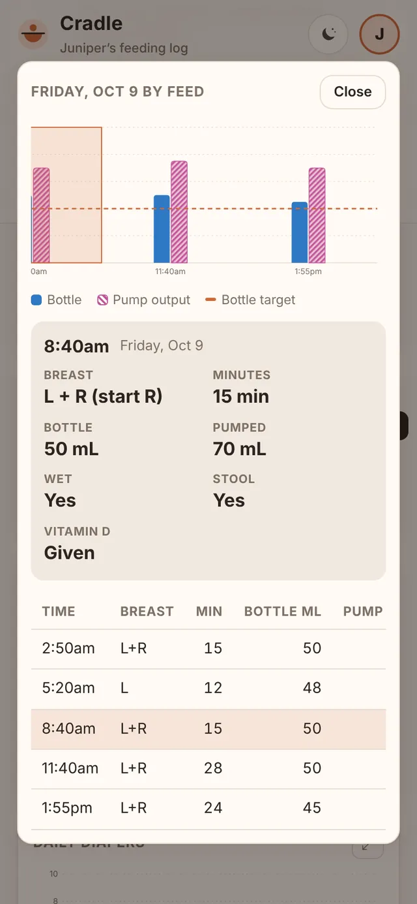
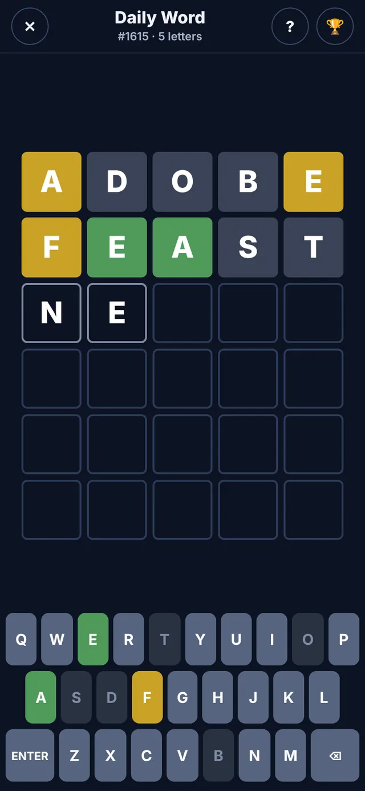
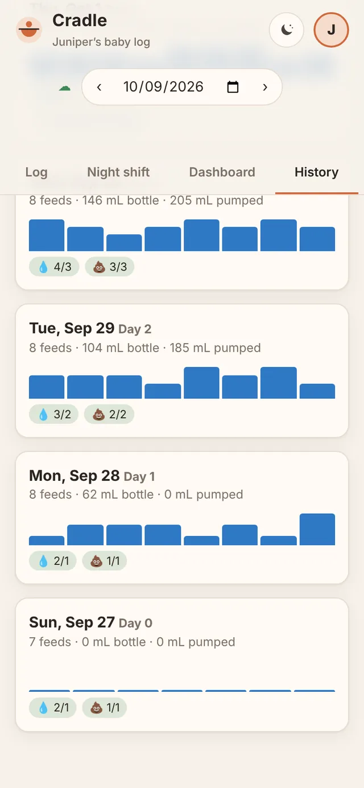
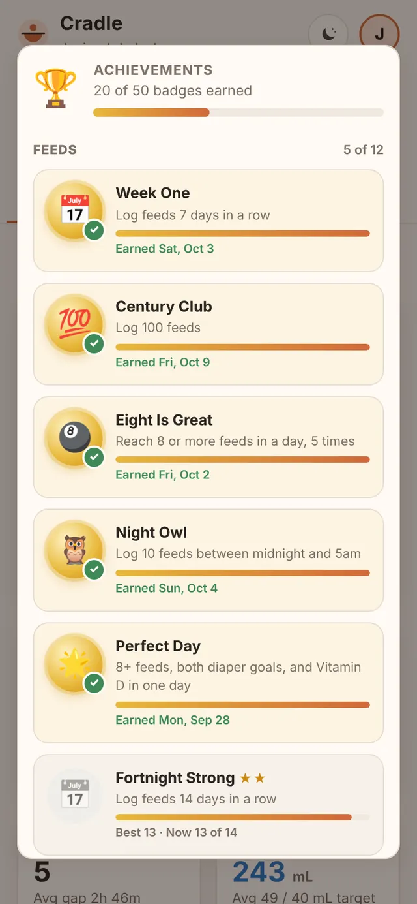
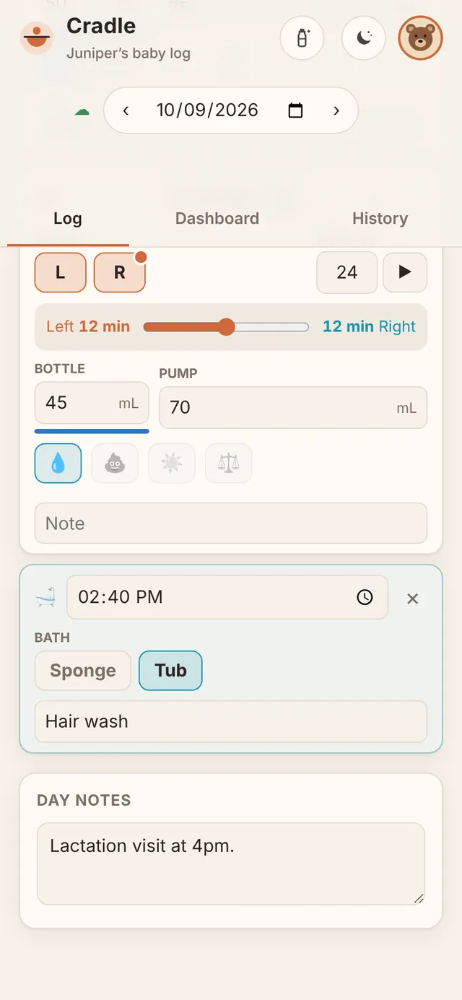
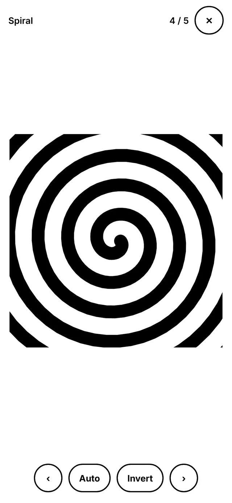
Night shift
A dim, low-glare screen with buttons big enough for one thumb while you hold a baby with the other arm.
Start feed logs the time and starts the timer in one tap.
Bottle in 5 mL steps, plus wet, stool, and Vitamin D, then Done. It saves as you go.
Three colors. Red is easiest on night vision. The screen stays awake when Cradle is installed.
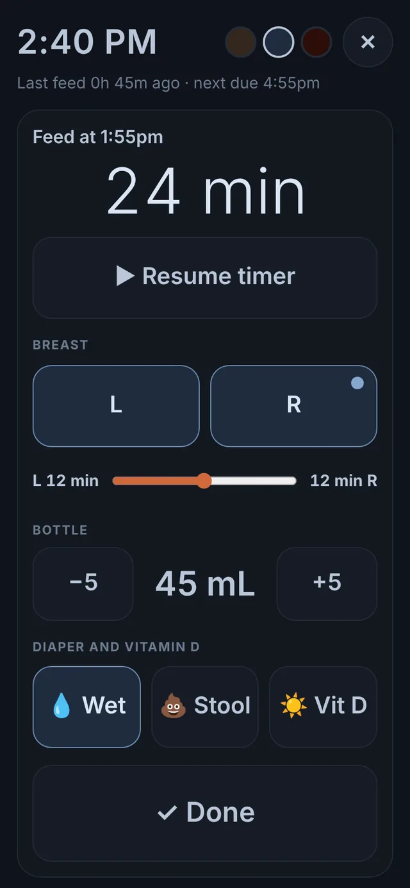
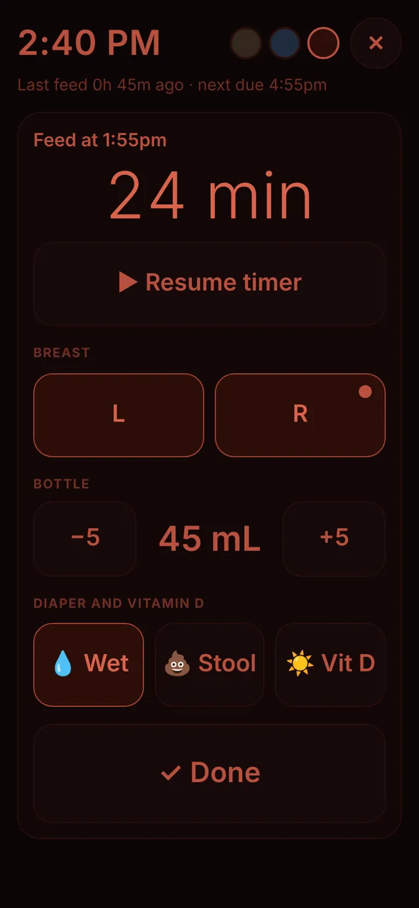
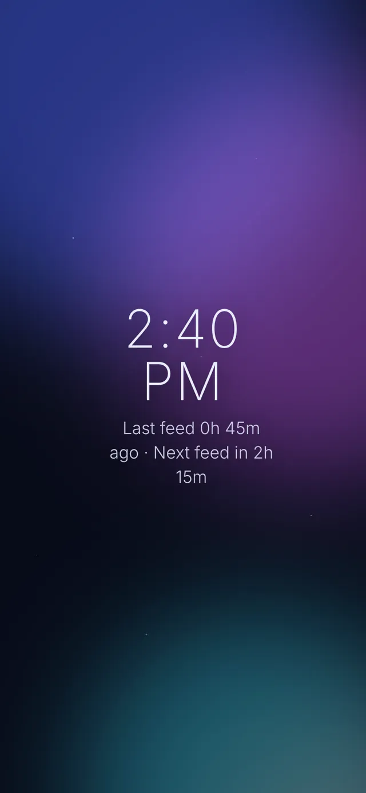
Calm
Tap the moon button for a slow, soothing screen with the time, how long since the last feed, and when the next one is due. The feed alarm still works while it's open.
Goals that grow with the baby
The birth day counts as Day 0. Goals climb one a day through Day 5, then hold at four of each. Every number can be changed in Settings to match what your care team tells you.
Family sharing
Whoever is on duty logs it, and every other phone has it within about 15 seconds. Two people can even edit the same feed: changes to different boxes are combined, and a note says who changed what. Each family's log is walled off from every other family by the database itself. Everyone can add a picture, a photo or a built-in one, and choose who sees it.
K7QM-4XPDA share key. Text it to anyone who should see this log.Start a family. Create an account with no key. Add the baby's name and birth date.
Share the key. Profile, then Family, then Share writes the invite text for you.
They join. Create account, paste the key, and the whole log appears.
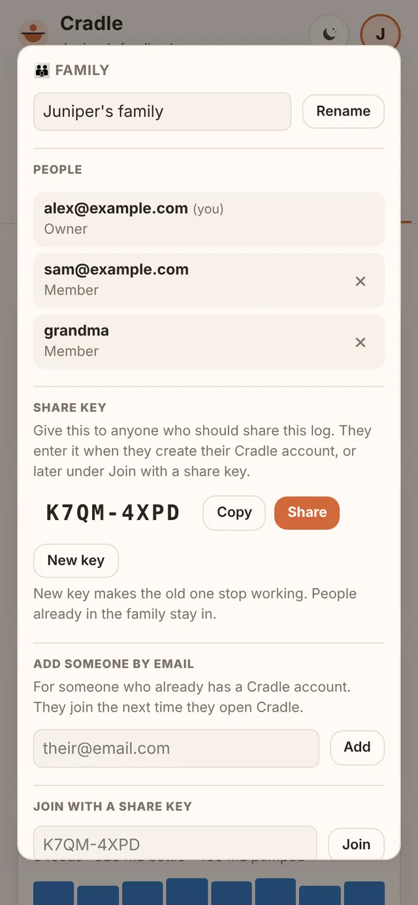
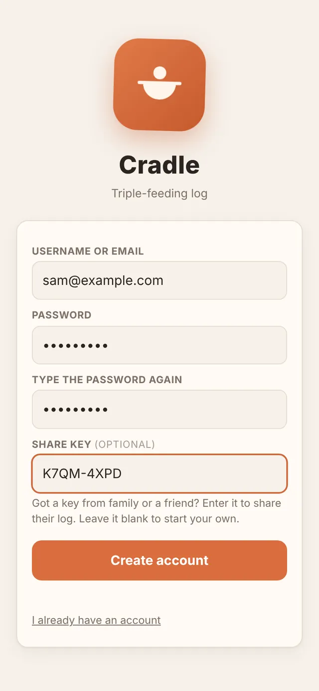
Appearance
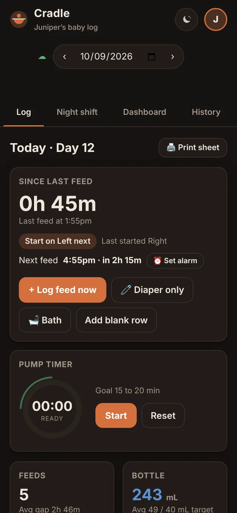
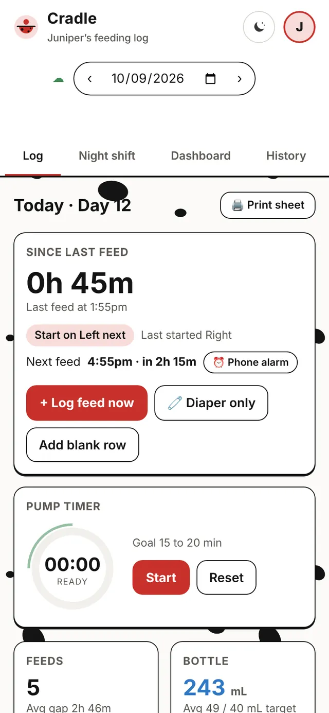
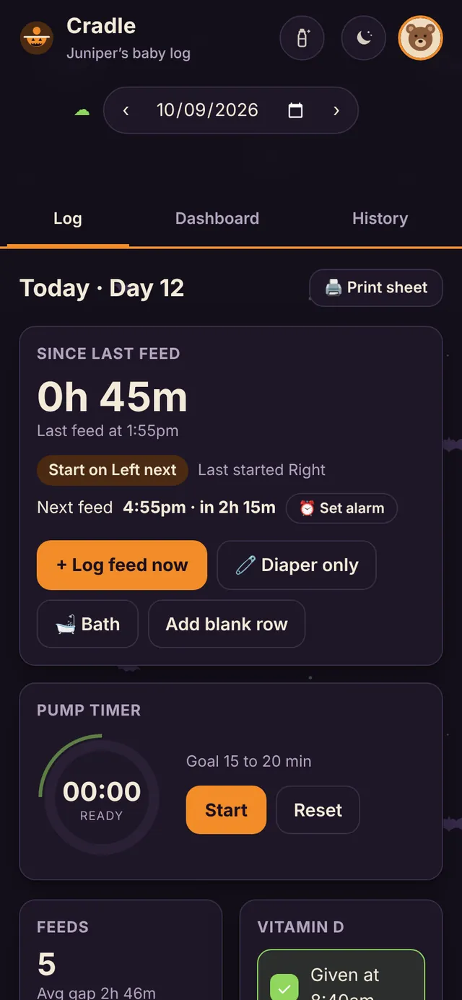
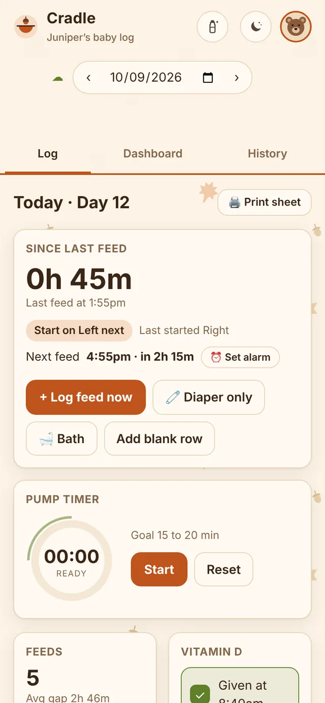
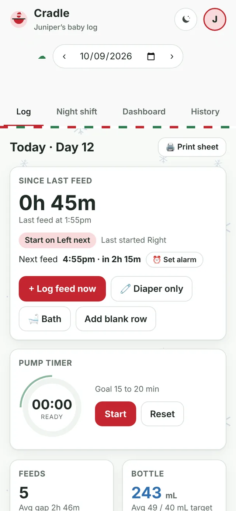
Under the hood
The whole app is one HTML file with no frameworks, no trackers, and no third-party scripts. The hosted site only runs its own code and only talks to your database. Each phone keeps its own copy and syncs through a free Supabase project that you own.
HTML file for the whole app. No dependencies.
for an entry to reach other phones while Cradle is open.
analytics, ads, or third-party scripts.
SQL scripts set up the database, and both are safe to rerun.
Good to know
Cradle is a notebook. Its goals are placeholders, and its totals are simple arithmetic on what you type. Follow your pediatrician or care team, and call them if you're worried about your baby.
Cradle was built with help from Claude, an AI model by Anthropic, and tested in a simulated setup. It hasn't had an independent security review. Keep backups with Export data.